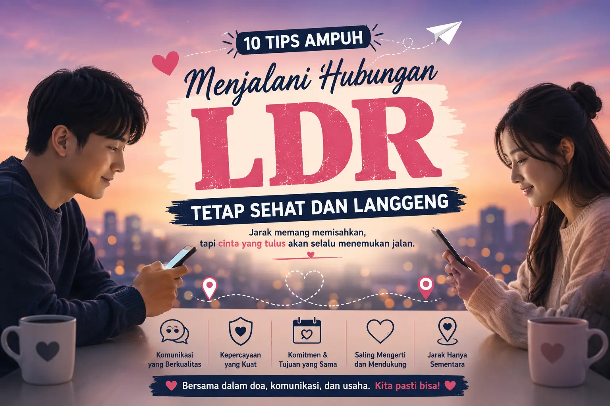
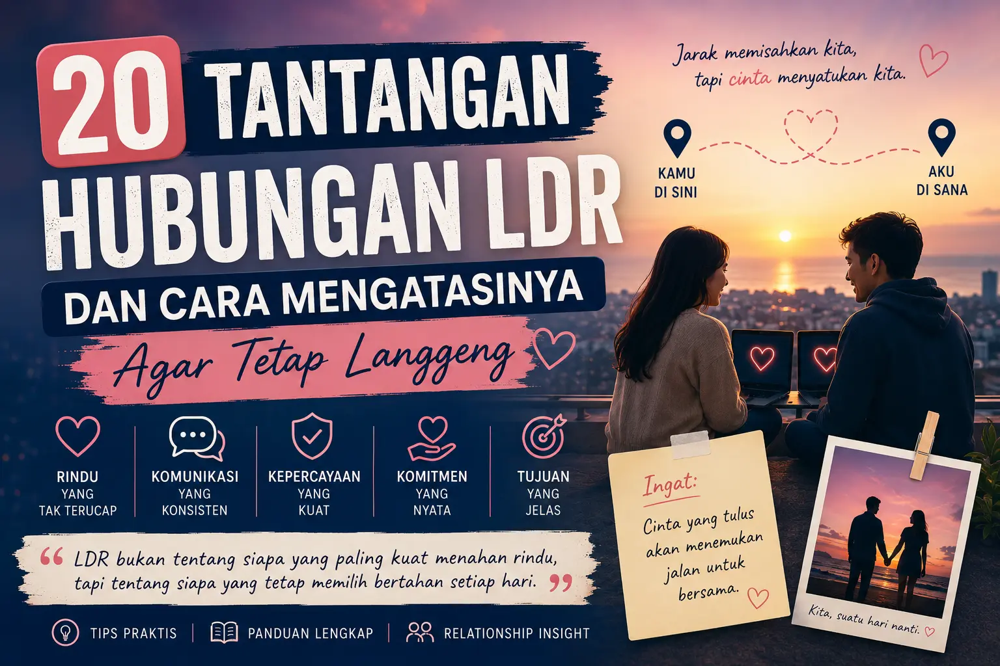
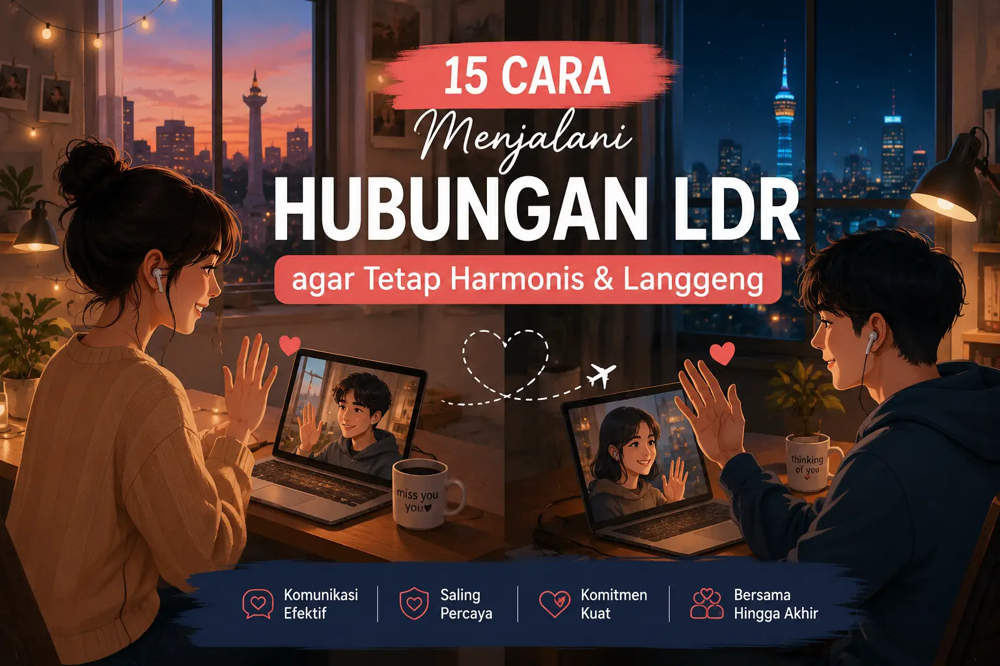
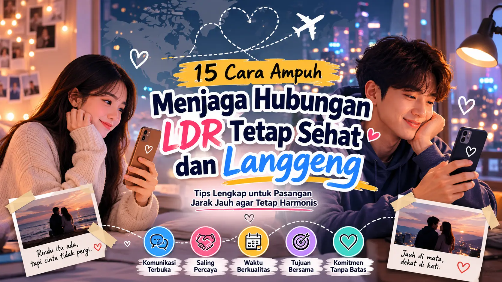
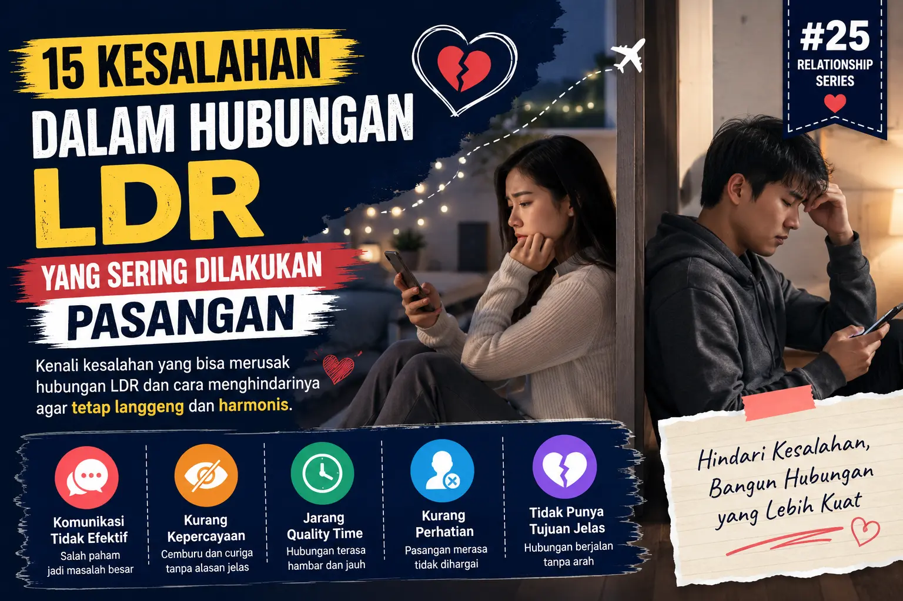
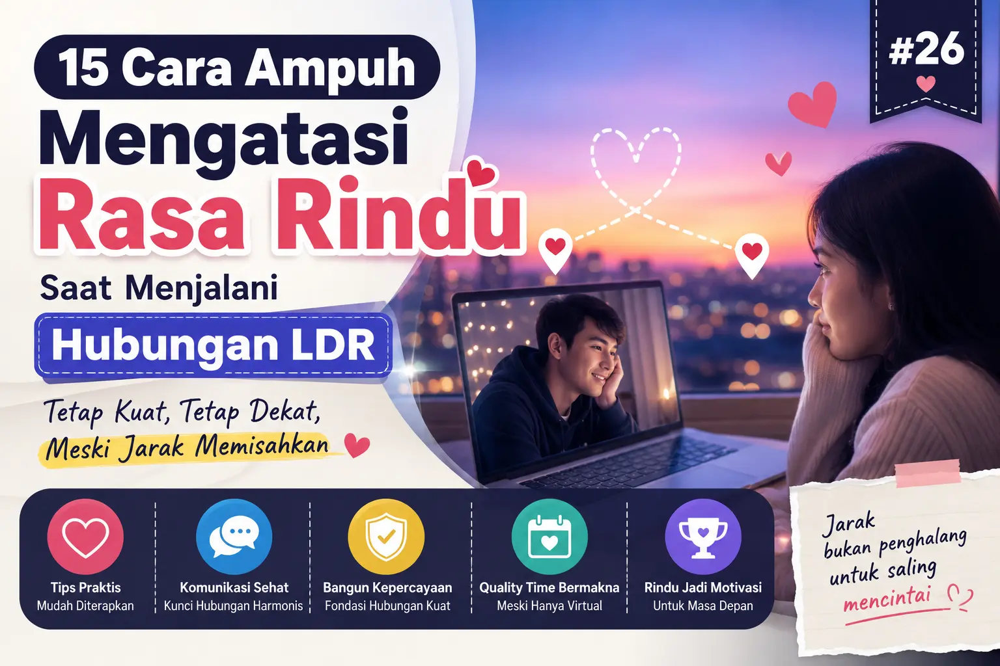
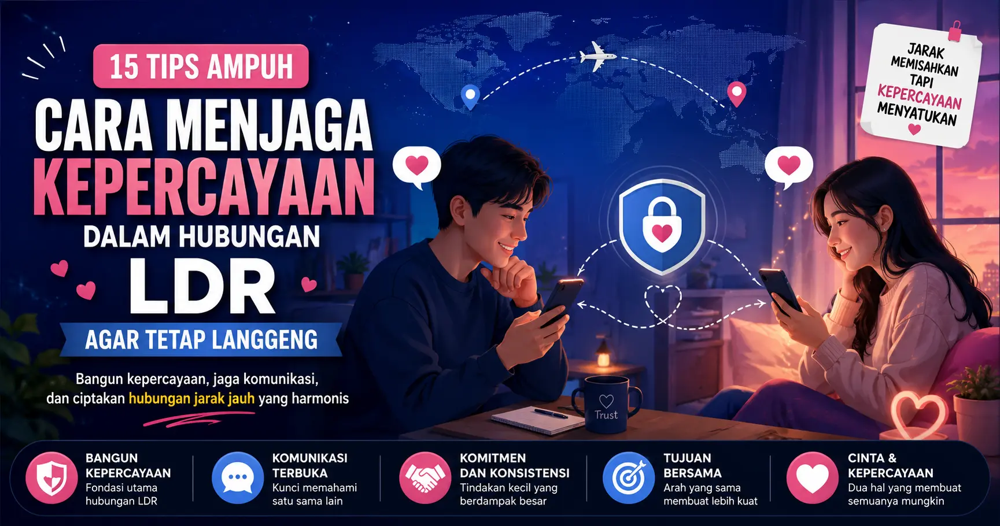
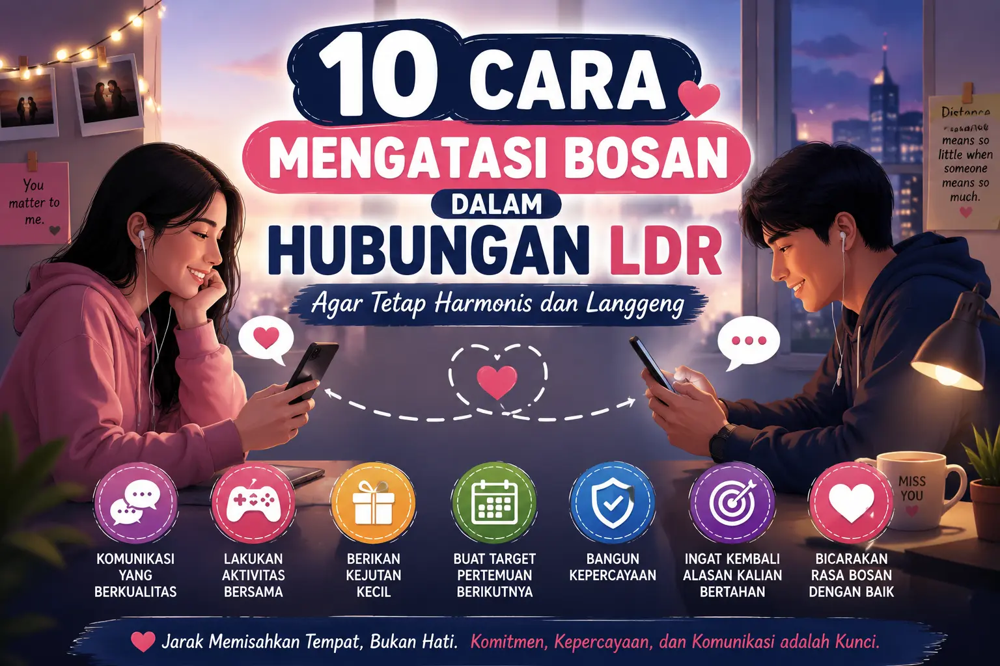

Cara Menjalani Hubungan LDR agar Tetap Harmonis dan Langgeng
Cara Menjalani Hubungan LDR agar Tetap Harmonis dan Langgeng, sering anda mengalami kesusahan saat pasangan jauh dari anda, begini cara menjalani agar tetap harmonis dan langgeng.

20 Tantangan Hubungan LDR dan Cara Mengatasinya agar Tetap Langgeng
Hubungan LDR memang penuh tantangan. Kenali 20 masalah yang paling sering dialami pasangan jarak jauh beserta cara mengatasinya agar hubungan tetap harmonis, penuh kepercayaan, dan langgeng

15 Cara Menjaga Kepercayaan dalam Hubungan LDR agar Tetap Kuat
Pelajari cara menjaga komunikasi, kepercayaan, dan inilah 15 Cara Menjaga Kepercayaan dalam Hubungan LDR agar Tetap Kuat

15 Cara Menjaga Kepercayaan dalam Hubungan LDR agar Tetap Kuat
15 Cara Menjaga Kepercayaan dalam Hubungan LDR agar Tetap Kuat.

Kesalahan dalam Hubungan LDR yang Sering Dilakukan Pasangan dan Cara Menghindarinya
Pelajari berbagai kesalahan dalam hubungan LDR yang sering dilakukan pasangan serta cara menghindarinya agar hubungan jarak jauh tetap harmonis, sehat, dan langgeng.

Cara Mengatasi Rasa Rindu Saat Menjalani Hubungan LDR
Pelajari cara mengatasi rasa rindu saat menjalani hubungan LDR dengan tips praktis, studi kasus, dan strategi menjaga komunikasi agar hubungan tetap harmonis dan langgeng.

Cara Menjaga Kepercayaan dalam Hubungan LDR agar Tetap Langgeng
Pelajari cara menjaga kepercayaan dalam hubungan LDR agar tetap harmonis dan langgeng. Lengkap dengan tips praktis, studi kasus, FAQ, serta solusi membangun hubungan jarak jauh yang sehat.

Cara Mengatasi Overthinking Saat Menjalani Hubungan LDR
Pelajari cara mengatasi overthinking saat menjalani hubungan LDR dengan tips praktis, studi kasus, dan strategi membangun kepercayaan agar hubungan tetap harmonis dan langgeng.

10 Cara Mengatasi Bosan dalam Hubungan LDR agar Tetap Harmonis dan Langgeng
Pelajari 10 cara mengatasi bosan dalam hubungan LDR agar tetap harmonis. Temukan tips komunikasi, membangun kepercayaan, hingga menjaga komitmen agar hubungan tetap langgeng.

10 Tanda Hubungan LDR yang Sehat dan Layak Dipertahankan
Kenali 10 tanda hubungan LDR yang sehat dan layak dipertahankan. Pelajari ciri-ciri hubungan jarak jauh yang harmonis, saling percaya, dan memiliki masa depan bersama.